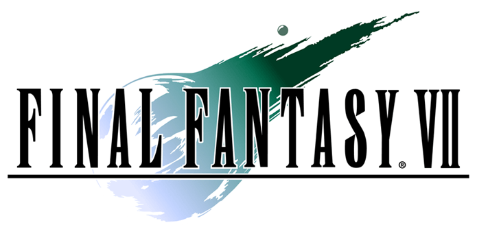

Introduction :
Généralités
Final Fantasy VII est un RPG développé par Square Enix sorti en 1997 sur Playstation, et dont un remake est sorti sur Playstation 4 en 2020.
On y incarne le protagoniste Cloud et ses alliés qui s'opposent à l'organisation Shinra et finiront par devoir empêcher la fin du monde.
Infos complémentaires : Wikipédia
Gameplay
On alterne entre des phases d'exploration du monde et des phases de combat au tour par tour via des rencontres aléatoires d'ennemis.
Pendant les combats, les personnages possèdent tous une barre d'ATB -Active Time Battle- qui se remplie progressivement, et leur permet d'agir à ce moment-là.
Ils peuvent lancer des attaques normales, des sorts magiques ou des invocations grâce aux Matérias dont ils sont équipés, fuir le combat ou
encore activer leur propre Limit Break.
Gagner des combats permet d'amasser de l'argent, des points d'expérience et des objets.
Infos complémentaires : Wikipédia